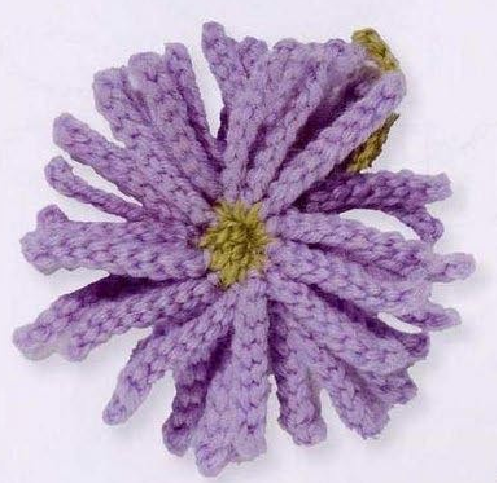
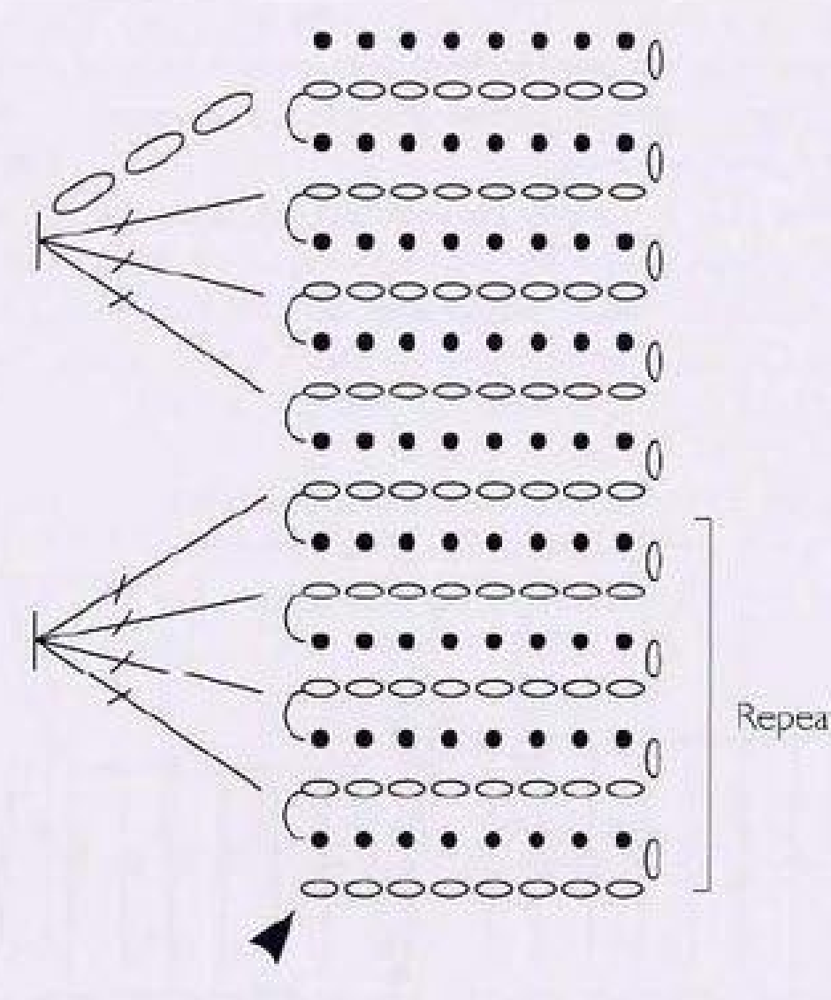
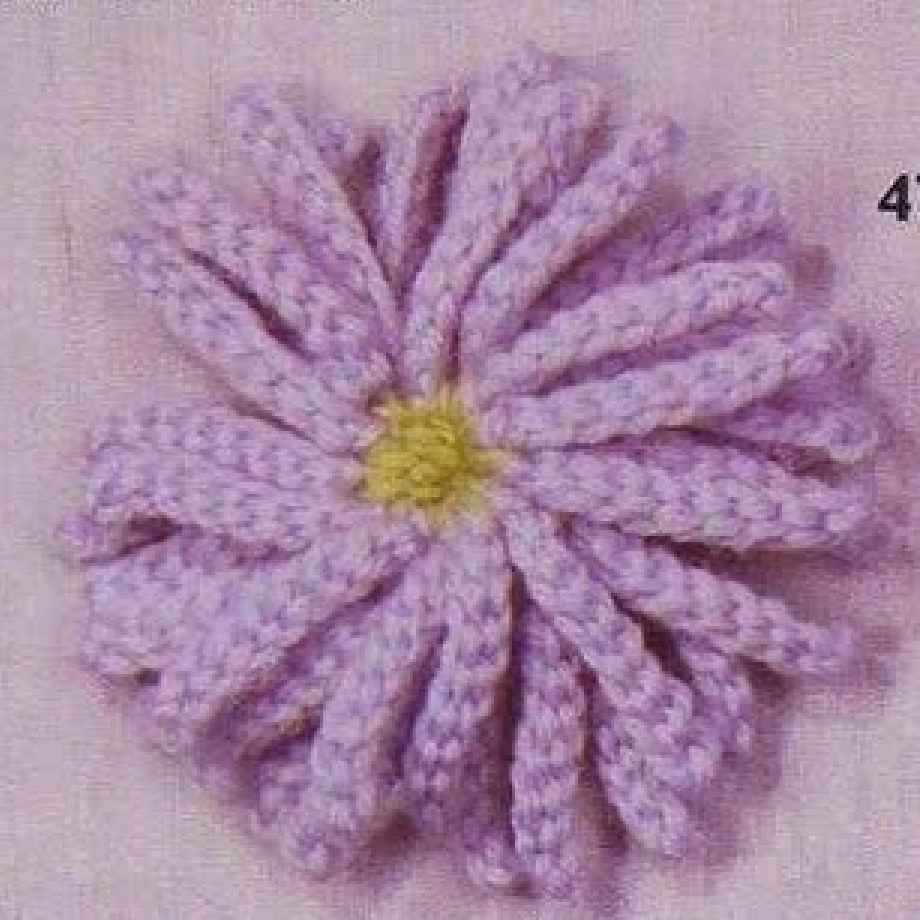
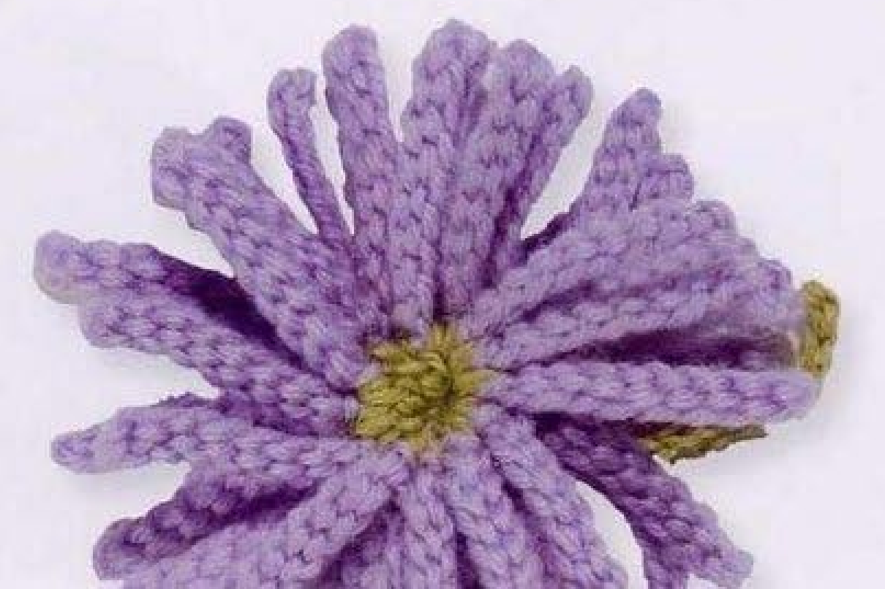

A crochet Michaelmas Daisy has narrow mauve petals layered around a gathered green center. The source construction starts with a row of thirty-seven chain-and-slip-stitch petals, adds green decreases along their bases, and coils the row into three petal layers. This guide follows pattern 47 in Lesley Stanfield’s 100 Flowers to Knit & Crochet, using US crochet terms and the source chart and photographs.

Key Takeaways
- Use 4-ply wool in mauve A and green B.
- Make thirty-seven petals; each starts with nine chains and returns with eight slip stitches.
- The green center uses decreases across the spaces between petals.
- Coil the center into three layers of petals, gather slightly, and stitch in place.
- A fifteen-chain green stem is worked back with fourteen slip stitches.
CROCHET MICHAELMAS DAISY FLOWER PATTERN
Project: One layered mauve flower with a green gathered center and short chain stem. These instructions preserve the source counts and assembly, translated into US terms. Hook, gauge, size, yardage, and difficulty are not stated in the entry; additional guidance below is practical advice.
| Skill level | Not specified. Practical guidance: comfortable chain, slip-stitch, decrease, and sewing skills are helpful. |
|---|---|
| Base size | One flower with three layers of petals and a stem. Finished measurements are not specified. |
| Yarn | 4-ply wool: mauve A and green B. |
| Quantity | Not specified. Allow enough mauve for 37 petals and green for the center, stem, and finishing. |
| Hook and gauge | Not specified. Choose a hook suited to your wool and sample for comfortable slip stitches. |
| Notions | Scissors, a blunt yarn needle, and optional markers or a counter. |
| US abbreviations | ch = chain; sl st = slip stitch; dc = double crochet; dc3tog = three dc decreased together; dc4tog = four dc decreased together. Source UK tr decreases become US dc decreases. |
| Petal row | With mauve A, repeat ch 9, skip 1 chain, sl st into each of the next 8 chains 37 times. Fasten off. Pin out and press the petal row appropriately for the wool. |
| Green center | Keep the same side facing. Join green B in the space between petals 1 and 2. Ch 3. Work dc3tog across the next 3 inter-petal spaces. Work dc4tog across each successive group of 4 spaces to the end. Fasten off, leaving a long end. |
| Assembly | Coil the center so the flower has three layers of petals. Gather the center slightly and stitch it in place. |
| Stem | Using the yarn end from the center, ch 15, skip 1 chain, and sl st into each of the next 14 chains. Fasten off. |
Recognize the Narrow Petal Construction
Each mauve petal is a short chain worked back with slip stitches. It is a slender stitched strand, not an open chain loop. The return stitches give the strand its body, while the skipped tip chain lets the work turn neatly. All thirty-seven petals are made consecutively as a row before the green center is added.
The layered finished shape comes from assembly. You do not make a circular first round and add three petal rounds around it. Instead, the green base of the completed petal row is coiled into the center. Thinking of the work as a fringe-like row first and a flower second makes the chart and the decrease placements easier to understand.
The source photograph shows mauve petals and a green center, with a green stem partly visible behind the flower. There are no separate leaves in this entry. Keep that distinction when choosing your materials or planning a reference-based version. A different center color or added leaf is a personal adaptation rather than a missing part of the written recipe.
Prepare 4-Ply Wool and Count Your Repeats
Use 4-ply wool in mauve A and green B, as specified. Choose yarns of comparable thickness so the narrow petals and gathered center fit together. The entry does not specify a brand, a hook size, a yardage allowance, or an exact finished diameter. Select a hook that lets you make slip stitches without forcing the hook through an overly tight chain.
Slip stitches can tighten as you work, so practice a small petal before starting the full row if necessary. Nine chains followed by eight return slip stitches should remain recognizable and flexible. If you grip more tightly during the return, the strand may become shorter or curl more than you expect. Consistent handling helps neighboring petals look similar.
A counter or written tally is useful for the thirty-seven repeats. Track completed petals, not every chain made across the entire row. You can also place markers after groups of petals to make recounting easier. Before finishing the mauve yarn, count the full row again while the petals can still be separated easily.
Count note: Every petal uses nine chains, with one skipped at the tip and eight slip stitches on the return. Thirty-seven repeats mean thirty-seven completed strands, not thirty-seven stitches in a circular round.
Read the Source Chart in US Terms

The oval chain symbols form each outward strand. The return slip-stitch symbols run back along those chains. The grouped tall symbols at the base indicate the green decreases that connect several spaces between neighboring petals. The chart abbreviates the full length of the row, so use the written thirty-seven-repeat instruction rather than counting only the petals drawn.
The book’s UK treble decreases are US double crochet decreases here. A three-stitch treble decrease in UK terminology becomes dc3tog in US terminology; the four-stitch version becomes dc4tog. The legs are worked into separate consecutive inter-petal spaces, then joined at one top. They are not a cluster of several complete stitches placed into one space.
The source says to keep the same side facing when adding green. Identify that face before joining B, and do not turn the work simply because you are accustomed to turning after an ordinary row. The green shaping is worked along the petal bases, with its first attachment in the space between the first and second petals.
Step 1: Make the Thirty-Seven Mauve Petals
With mauve A, chain nine. Skip the chain nearest the hook and make a slip stitch into each of the next eight chains, working back toward the starting point. To make each slip stitch, insert the hook into the chain, draw the yarn through the chain and directly through the loop on the hook. Keep the return tension even rather than tightening each stitch sharply.
After completing the eight return slip stitches, begin the next petal by chaining nine again. Skip one chain and work back through eight chains with slip stitches. Repeat until you have thirty-seven completed petals. There is no separate foundation chain running under the whole row in the written instructions; each new petal begins where the preceding one returns to the base.
Set the growing row down occasionally and separate the strands. Count finished petals while checking for a missed return stitch or an accidental extra chain. A petal can look twisted from handling even when its count is right. Straighten it gently before deciding it must be remade. The completed row should have thirty-seven strands and recognizable spaces between their bases.
Fasten off the mauve yarn after the final petal. The source then directs you to pin out the row and press it. Use a method suitable for your wool and follow its care instructions. No pressing temperature, duration, or blocking measurement is given. Test the handling method on a sample instead of assuming that all wool tolerates the same treatment.
Step 2: Locate the Green Center Spaces
Keep the same side facing and join green B in the space between petals one and two. These spaces lie between the petal bases; they are not the tip chains at the ends of the long strands. Spread two neighboring petals gently to see the attachment location. Mark the starting space if the small base is difficult to distinguish.
The thirty-seven-petal row has thirty-six spaces between adjacent petals. The green sequence begins in the first space, then uses the next three spaces for the initial decrease. After that, the remaining spaces are used in groups of four. This arithmetic is a useful check on the placement sequence before you start coiling the row.
Do not join the last petal to the first to make a ring before adding the center. The source starts with a linear petal row and shapes it through decreases and coiling. Turning it into a circular ring early would change the available spaces and the assembly method. Keep the two ends of the row identifiable until the flower is sewn.
Step 3: Work the Initial Three-Stitch Decrease
After joining B, chain three. Work a US dc3tog across the next three inter-petal spaces. To form one partial double crochet leg, yarn over, insert the hook into the next indicated space, draw up a loop, then yarn over and draw through two loops. Leave the remaining loops on the hook while beginning the next leg.
Make one partial leg in each of the three consecutive spaces. After the third leg, yarn over and draw through all four loops remaining on the hook. Those three separate placements have become one shared stitch top. This draws the neighboring petal bases together without sewing them at this stage.
Keep the mauve strands clear while forming the green legs. If a long petal is caught inside a decrease, the finished flower can have a folded or trapped strand near its center. Pause and spread the work before tightening the shared top. The decrease belongs across the base spaces, not around the length of a petal.
Step 4: Continue with Four-Stitch Decreases
Work a US dc4tog across the next four spaces. Start one partial double crochet in each consecutive space, leaving the last loops on the hook. When all four legs have been started, yarn over and draw through the five remaining loops together. The four base placements now share one top.
Repeat the four-space decrease to the end of the petal row. The placement arithmetic leaves thirty-two spaces after the first joining space and initial three-space decrease, so there are eight four-space groups. Use that as a check, while keeping the source direction to continue the grouped decrease sequence to the end.
Fasten off green B and leave a long yarn end. The source uses this end for gathering, stitching, and forming the stem, but it does not specify an exact tail length. Leave enough for your assembly rather than trimming it as an ordinary short finishing end. Keep it accessible while shaping the flower.
Decrease checkpoint: Start in the space between petals one and two, then work the next three spaces together. The remaining thirty-two spaces form eight groups of four. Do not add unprinted chain separators between those decreases.
The Center Shapes the Petal Row
The green decreases reduce many attachment spaces to fewer shared tops. Coiling that shaped edge arranges the mauve fringe in layers. The decrease count and the number of petal layers describe different parts of construction, so do not replace one with the other.
Coil into Three Petal Layers
The source asks you to coil the center so there are three layers of petals. Arrange the green edge into a coil while letting the mauve strands fan outward. Distribute the strands through the layers instead of forcing every visible petal tip into a single flat circle. Some overlap is expected in the finished bloom.
Gather the center slightly and stitch it in place using the long green end. “Slightly” matters: the goal is a compact center that holds the layers, rather than a knot that swallows the petal bases. Take small securing stitches through the central structure and inspect the face of the flower as you work. Keep the strands clear of the needle.
The source does not prescribe an exact count of petals in each layer. Thirty-seven does not divide evenly into three equal groups, so do not invent a requirement for twelve identical petals in every layer. Follow the intended three-layer arrangement and compare the overall shape with the finished-flower photographs.

Make the Short Green Stem
Use the yarn end from the center to make the stem. Chain fifteen, skip one chain, and slip stitch into each of the next fourteen chains. Fasten off after the return. This repeats the same outward-chain and worked-back idea used for the petals, with a longer green strand serving as the stem.
Keep the stem end available while tidying the underside. The entry does not add a leaf or a separate stem attachment instruction. Avoid inventing another foundation or a glued support. Arrange the finished stem so it emerges naturally from the center and check that any securing stitches hold without pulling the flower’s layered face out of shape.
Troubleshoot Petals, Decreases, and Assembly
One petal is noticeably shorter
Check for nine chains and eight return slip stitches. If the numbers are correct, compare tension and see whether the strand is merely twisted or caught in the green center. An actual missing chain or return stitch is a construction error; a correctly counted strand may only need to be released and arranged.
The green row does not reach the end
Recount the thirty-seven petals and locate all thirty-six spaces. Check that each decrease leg went into the next unused space rather than skipping one or repeating a placement. The first joining space, next three spaces, and eight four-space groups account for the full row. Resolve placement before adding extra stitches.
The flower looks flat or tangled
Look at the coil and the distribution of strands. The source calls for three layers, so a single ring of petals is not the intended assembly. Loosen unfinished sewing enough to arrange the layers, then secure the center again. Separate trapped strands with your fingers rather than pulling sharply on individual wool petals.

Customization and Suggested Uses
The source colors are mauve and green. A second flower in another palette is a personal color variation. Keep the thirty-seven-petal row, decrease sequence, and stem recipe unchanged while comparing colors. Different yarns and hooks can alter dimensions, but the entry does not offer a measured sizing system or graded counts.
Suggested decorative uses include a bag applique or a flower sewn to a fabric accessory. These are added ideas, not a separate project in the entry. Attach through the stable central base and allow the petal layers to remain free. Make one sample first if the motif must fit a specific space, and measure your own completed flower after assembly.
Variation guidance: Changing petal count or the decrease groups affects assembly. Label any such changes as an adaptation, and keep a record of your tested counts rather than presenting them as the original recipe.
Michaelmas Daisy at a Glance
- 4-ply wool in mauve and green.
- Thirty-seven narrow petals made with nine chains and eight return slip stitches each.
- Green dc3tog and dc4tog shaping across inter-petal spaces.
- A gathered center coiled into three petal layers.
- A fifteen-chain stem with fourteen return slip stitches.
Conclusion
Michaelmas Daisy combines simple petal strands with grouped center decreases and careful coiling. Count the full mauve row before joining green, identify the base spaces, and preserve the long end for assembly and the stem. The compact card provides the complete recipe, while the source chart helps clarify placement. Click the Pin to return to the pattern when you are ready to make the layered flower.
Source and Tags
Source: Lesley Stanfield, 100 Flowers to Knit & Crochet, pattern 47 Michaelmas Daisy, printed instruction page 70, PDF page 64 in the supplied scan. The original chart uses UK terms; its treble decreases are translated here into US double crochet decreases. Source photographs show completed flowers. Added materials, handling, and decorative-use suggestions are practical guidance rather than source specifications.
Michaelmas DaisyCrochet FlowersMauve WoolLayered PetalsSlip Stitch CrochetUS Crochet Terms